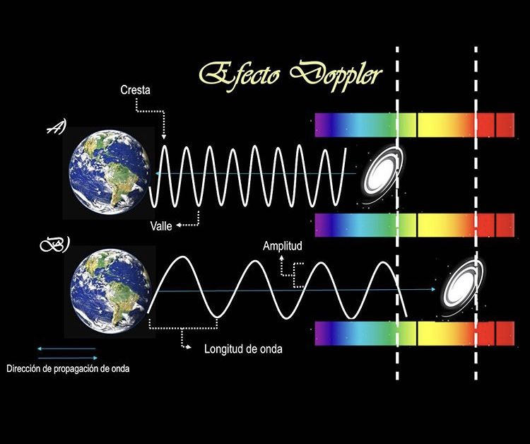

¿Que estudia?
Estudia las estrellas,los planetas, las galaxias, los agujeros negros y demás objetos astronómicos como cuerpos de la física,incluyendo su composición, estructura y evolución.
¿Cuales son las principales caracteristicas?
La astrofísica es una ciencia tanto experimental, en el sentido en que se basa en observaciones, como teórica, porque formula hipótesis sobre situaciones físicas no directamente accesibles.
¿Cuales son los principales colaboradores?
Nicolás Copérnico recuperó la idea de que el Sol era el centro de nuestra galaxia y no la Tierra. También propuso un nuevo orden para los planetas en relación con el Sol, que la Tierra orbita el Sol una vez cada año y que la Tierra gira completamente sobre su propio eje cada día.
¿Cuales son las leyes?
Hay cuatro leyes universales probadas por la ciencia: la ley de la gravedad que aplica a grandes magnitudes, al igual que la ley electromagnética; las leyes que rigen en pequeñas magnitudes, a escala atómica y son la nuclear fuerte y la nuclear débil.